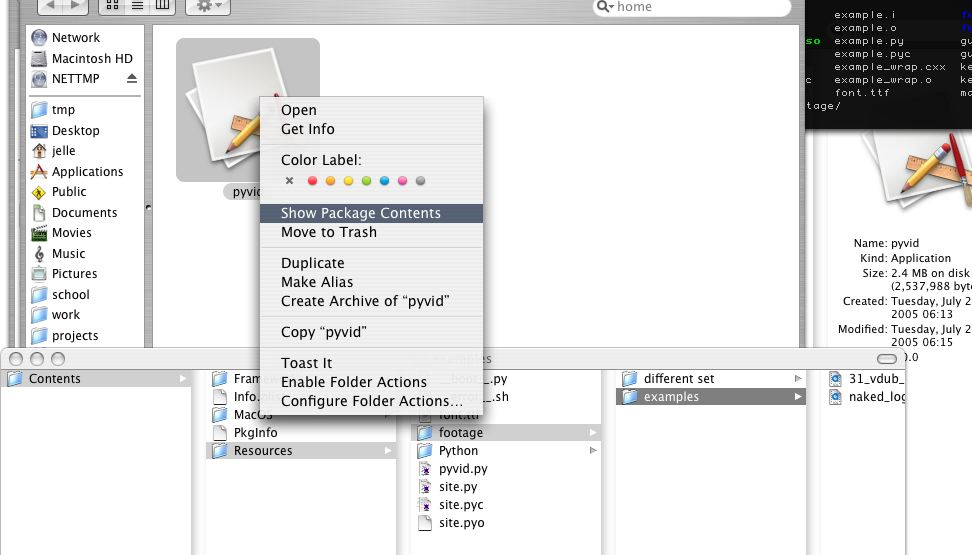

to insert extra footage, do the following. alt-click on pyvid.app, select "show package contents". browse to Contents/Resources/footage/. create folders and insert footage there. every folder becomes a set, with one or more pages (every 18 files (recursively) become one page. file extention must be .mov